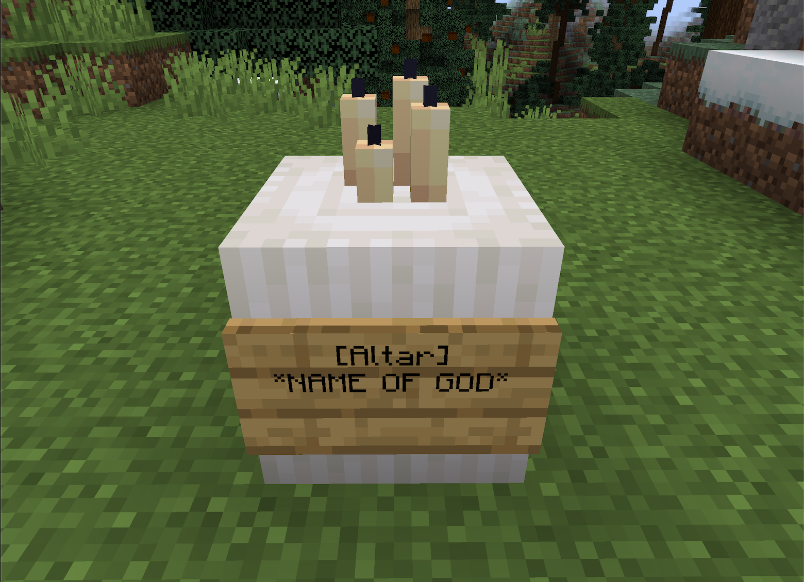

An Introduction to AirshipCraft
v2.1.0 | Documentation of the mechanics and vision for the server.
📝 Info: This document was last updated on 2023-01-31
⚠️ Warning: All information should be treated as current unless specifically told otherwise.
❓ Looking for user guides? Click here.
All information provided in this document is aimed at giving the new members of the development team as well as some existing old members some insight on what the AC:R project hopes to achieve. I will attempt to describe every single aspect of the server from it's history, it’s community, the type of players we want and attract, it’s issues over the years of past versions and attempts, it’s plans on how to fix those issues, planned features, mechanics, and gameplay, and finally it’s plans for the future in the greatest amount of detail possible.
This is a living document. All content regarding mechanics and gameplay is subject to change as time goes on and development progresses. New things will constantly be added as they are developed.
See the changelog to see a list of features addded/removed and/or updated.
This project utilizes SemVer for its versioning structure. The correct project version number should be displayed at the top of this page and the top of the changelog.
⚠️ Warning: at thie time of writing, this document is currently in major version 0 meaning there is no playable or stable version and the project is still in initial development.
A Brief History
This is the second iteration of AirshipCraft. The first being mjcrafter100 (now Grau_Wulf)'s original AirshipCraft from 2015. The vision for the server was little more than an SMP server focused mainly on Movecraft and Factions nothing else. Although simple it was extremely popular and loved by many. As AirshipCraft evolved it changed to become a geopolitical server which would later be known as Total War. The Total War series of Minecraft servers will continue to face their own iterations of changes but the main focus was always some sort of land claiming plugin and Movecraft.
The early economy system was nothing more than a few chest shops in random locations with different buy and sell prices to simulate different regional markets and to encourage players to travel around the map on “trade runs” in-order to gain money. An archaic form of a “tech tree” was implemented, using server play time and permissions as a deciding factor in what weapons or equipment a player has access to, which as you can imagine became quickly imbalanced.
AirshipCraft: Reborn (AC:R) is similar to the original AirshipCraft in it's heavy focus on Movecraft, however that is where the similarities end.
Project Overview
This will serve as an overview of the entire project. More specific topics with more in-depth explanations and plans for their implementation will recieve their own section. You can view all of these sections from the table of contents on the left of this page.
Outline
The purpose of this project is to fulfill the vision of creating a "true" geopolitical experience in Minecraft. Although it is not based on an Earth map, the map is Earth-like enough to encourage the natural growth and creation of nation states through either player or NPC manipulation. "Dynamic" is the key buzzword for this project.
The world, much like real-life, should feel fluid and constantly changing. Changing market prices due to inflation and supply and demand patterns, wars and diplomatic actions by foreign nations, natural disasters that effect multiple aspects of life, etc. All of these are examples of things that this project attempts to replicate in the virtual world.
A primary focus of this project is the concentration on NPCs and heavily involving them in game mechanics. This is to keep gameplay constantly interesting as they (theoretically) serve many advantages to our goal.
With NPC controlled nation states scattered across the map, there will constnatly be something for the player to do. In theory the server should be fun and playable even if the player is completely alone on the server.
The goal of the economy is to be player-driven. There should be enough incentive for players acquiring currency without it being too much of an obstacle and therefore potential deterrant for new players. Finding a good balance is difficult but not impossible.
See Economy
We want to provide a server where realistic stratagem, tactics, and creative thinking will allow players to get ahead. We want players to be able to have and control their own fully functioning and dynamic nations, towns and empires. We want to find the balance between complexity and simplicity. Allowing for in-depth and complex mechanics but still being extremely player and noob friendly but still being able to provide a steep enough learning curve to separate the good players from the amateurs in more aspects than just raw Minecraft skill.
Although AirshipCraft was never traditionally marketed as a “roleplay” server (and still technically isn’t), we are taking steps to emulate a kind of “roleplay” environment to immerse players in this new world we are building. This includes the writing of lore, the creation of a quest system, player cards and other things that promote roleplay. Roleplay is highly encouraged but we will not enforce it and allow it to occur naturally.
Game Design
The project is designed with the mindset of building a game. The goal is to design and implement gameplay elements that foster player engagement and boost player retention. Althoguh the server is designed so it could be fun without being populated, it's more beneficial for all parties if there is a sustained playerbase.
This graph outlines a player’s skill vs. difficulty.

Note this shows three difficulty levels and how players react to it based on their skills. Also note that the blue line enters all three boxes, which is important to get the most players interested in the gameplay.
By itself, this means nothing. However, combine it with this graph:

This shows that in the median, player interest is tied to efficacy. In other words, the better you are at something, the more you’re interested. The interest drops off according to standard deviations from the median difficulty line shown in the first graphic.
The full meaning of both of these graphs isn't realized until we look at this next graph:

This shows that as you move across difficulty levels, you engage players. This implies you have a game that can watch a player’s reactions and scale difficulty based on their performance. The AI needs to constantly move between the optimal challenge line, the blue line in the first graph. It is based on these assumptions:
- One cannot design a difficulty that is perfect for everyone.
- Therefore, we must move the player above and below the difficulty line using Rewards.
- The best way to do this is to provide multiple reward types that cater to different styles of play.
Rather than categorize players as high skill vs. low skill, attenuate the game to make players feel high skilled and low skilled. Both levels serve a purpose, as graph 3 shows. Note that the stuff in the quotation marks in graph 3 are the negatives of this mode.
Given this, we think of the following as guiding principles:
- As players move above the optimal challenge line, they feel high satisfaction.
- Keep them there too long and they quickly devolve to more negative feelings of the play being ‘too easy’ or ‘childish’.
- As players move below the optimal challenge line it leads to high player effort to succeed.
- Here the positive emotions of challenging and exciting are balanced by the negative pitfalls of it being ‘too hard’ or ‘frustrating’. You can’t keep them here too long either.
- The key to successful engagement is to move players across this line using a rewards system that caters to both high satisfaction (ranks, levels, recognition, Right Brain motivators) and high effort (items, upgrades, bonuses, Left Brain motivators).
And finally, again:
- No two people are the same, so there is no true ‘optimal challenge line’. It is a construct used to understand from measurement when to make hurdles harder or easier based on individual player performance.
This is one way to deal with player engagement and create addiction. Great games closely adhere to the ‘Optimal Challenge Line’ as created by each player’s skill and use the Octalysis drivers to push players back and forth across the line.
Octalysis is a great breakdown of player motivations by Yu-Kai Chou. We can use the drivers here to motivate high satisfaction and high effort players, as each respond to different things.
This is beautifully captured in this graphic:

The graph is a very good guide on what should be kept in mind when proceeding with development of the server/project. We can however, for sake of simplicity, focus on mainly the key points of the graph.
- Progress:
- As they advance in the game, players should feel a sense of accomplishment. Clear objectives, like leveling up different skill or techtrees or unlocking of new items or abilities, or things such as making the world more "exploration worthy" can help achieve this.
- Feedback:
- Players must receive immediate feedback on their actions, such as points earned or money earned, in order to improve gameplay and keep them engaged.
- Difficulty:
- The game should be challenging enough to be engaging without being too difficult to the point where players give up in frustration.
- Social:
- Replayability:
- The game should entice players to return and play it repeatedly. Randomly generated content, immersive and dynamic world, and other event-like activities and objectives can help accomplish this.
A good storyline can engage players and make them want to keep playing to see what happens next. We aim to acommplish this by providing multiple quest lines that have benefits and impacts on the player who chooses to complete them and possibly (slight) drawbacks to those who don't in-order to gently nudge players to keep playing and trying different things.
Philosophy
It's important to maintain a common shared philosophy when designing or working on mechanics. The general mantra is to add quality of life (QOL) improvements to the player whenever possible. If we are able to streamline the boring, basic, vanilla mechanics and make it very easy, or in some cases automated, for the player: the player can focus on the unique, more interesting and "fun" mechanics we have designed for them.
If a player sits and has to mine or farm for resources manually for everything they need then they will only spend about 1/4th or less of their time actually playing the game since 3/4ths of it would be spent grinding. Try to limit uneccessary grinds.
Designing any sort of progression system or mechanic that requires players to put in effort is good (as we have stated before in the previous section), however, there's a difference between challenging and time consuming and we want to limit time consuming whenever possible.
Purpose of These Docs
This documentation serves as a guide to potential/future developers who have graciously volunteered or have been brought on to the team to work on AirshipCraft.
Planned features which are outlined and explained in any of the subsections to the left of this page might include a note at the top of the page such as:
Currently unimplemented.
Implemented as of YYYY-MM-DD.
Currently being developed as of YYYY-MM-DD.
These notes give a sort of status indication of what features have been added, which are currently being worked on, and what features have not been implemented at all.
Written by:
Zeyad “zune” Rashed,
Head Developer and Project Manager
AirshipCraft
AirshipCraft: Reborn
Contact:
Website (Homepage)
Discord (Discord)
GitHub (GitHub Repo)
Changelog
All notable changes to this project will be documented in this file. This includes new features in-game such as plugins or mechanics, changes to existing features, plugins, mechanics, or additions/removals to the backend or frontend of the website or databases involved in the project as well as most notibly, changes to this documentation.
The format is based on Keep a Changelog, and this project adheres to Semantic Versioning.
[v2.1.1] - 2023-1-24 - 2023-1-31
Added
- Docs
Began writing of the project overview(DONE)- Added various economy related pages
- Begun implementation of page tags such as "Unimplemented", "Implemented" and "Currently being developed"
- For now they are just text tags
- Created new Misc. section
- Currently includes "Lore" and "Quest" pages.
- Added "philosophy" section to the introduction page.
- Added page for land claiming
- Added page explaining nodes
- Page to explain the territories better
- Explain using handles over IDs
- Economy related pages:
- Cults page.
- Explanation of cult objects
- Breakdown of Altars
Changed
- Docs
- Changed structure of the table of contents
- Moved the Map section underneath the Mechanics section as it made more sense
- Moved "Lore" page to no longer be nested underneath the Map section and instead moved under Misc.
- Updated footer on first page
- Fixed various small formatting errors
- Changed structure of the table of contents
Removed
[v2.1.0] - 2023-1-2 - 2023-1-23
Added
-
Web
- Seperate repositories for better version control via git
- Created seperate repo to hold the documentation.
- Created seperate repo for homepage
- Started work on
/craftviewerand/market
- Seperate repositories for better version control via git
-
Discord
- In process of creating seperate Discord server exclusively for developmental purposes.
- Arya
- Creation of seperate repository for Arya's core module for better version controlling
-
Server
- Upgraded server hardware to 6 cores and 16 GB RAM
- Set up
rdiff-backupin-order to periodically backup the map - Pruned uneccesary/redundant testing environments
-
Map
-
Began work on "Port Xile" as well as plotting out the starting point for "Bettesville"
-
"Port Xile"
- Market area completed, needs polishing/decorating
- Social area half finished, feels empty atm
- Main fortress near complete needs interior/rooms
- Residential area near complete, needs a few more blocks to fill out space as well as creation of a "high end" district
-
Changed
-
Misc
- Fixed project version to display
v2instead ofv0.
- Fixed project version to display
-
Docs
- Restructuring of the documentation
- Creation of user guides
- Began writing of the project overview
Removed
-
Web
- Documentation and homepage from main web repository, moved to seperate repo
- Configured Dynmap
- To use external webserver instead of the default internal webserver
- Installed LiveAtlas UI
- New link: https://airshipcraft.tk/map
-
Discord
- Moved
coremodule of Arya to seperate repository
- Moved
Currently unimplemented.
Economy
Overview
The economy is a crucial point of the project/server. It builds the core of the overall gameplay design as it gives players a purpose. Building a good economic system within the game is a crucial step in setting the foundation for creating a positive feedback loop in the player's experience.
A good economy allows players to trade and exchange resources in order to progress or improve their gameplay experience. Our economy system aims to include elements such as supply and demand, inflation, and player-driven marketplaces. A good economy system should allow for player choice and strategy, as well as creating opportunities for players to specialize in certain in-game activities. A balanced economy can prevent exploitation and provide fair opportunities for players to acquire resources.
A balanced economy can prevent exploitation by ensuring that there is a fair distribution of resources and opportunities for all players. This can be achieved through a variety of methods, such as setting limits on the amount of resources that can be gathered or traded, or adjusting the costs of goods and services based on supply and demand; both methods we plan to implement.
Additionally, a balanced economy can prevent players from cornering the market on a particular resource, or charging exorbitant prices for goods or services, by placing caps on the prices that can be charged or by adjusting the availability of resources based on player actions.
If the economy is well designed enough, it will be easier for players as well as the moderators to be able to detect suspicious activity that could be caused by player exploitation and put a stop to it a lot easier.
See Market
Currency
A physical item currency will be implemented. Theoretically, we will be able to allow players to mint their own currencies and assign them value based on in-game factors to allow for currency exchanges and a more competitive economic ecosystem.
This will also allow for more complex actions and for more customizability and incentives to form things such as banks and companies.
Also by implementing a physical item based currency it gives more incentive to raiding, PvP, and wars.
Currently unimplemented.
Market
The market system is one of the key features of the entire project as it serves as the backbone to the economy. Caution must be used when designing, discussing, or working on features of the economy in general and the market system in particular. Measures need to be taken to ensure the system can not be gamed or atleast the gaming of the system would be kept to a minimum. With a proper dynamic economy we can avoid players finding METAs that break the economy.
Overview
There will be two parts to the market. The global and the local market.
The global market determines things on a server-wide scale such as price ceiling to set the default cost of items put on sale on the market if not specificed by the user. It also creates an index on the webserver as a reference for players to be able to see a spreadsheet of the current market prices of items. The global market is meant to be a guideline to build the local markets but should not be limiting to the end user in any real way.
The local market determines prices and sale of goods on a region basis. Much like the global market, the local market sets priece ceilings on items and uses the global market prices to set the maximum initial price on items. The local market also records how many unique vendors sell a certain item in that region and inversely raises the price ceiling to allow players a chance to be able to corner the market in that specific region.
The Global Market
The glohal market monitors the supply of items server-wide. Supply is the amount of items submitted to chests connected to a vendor/merchant NPC. This keeps track of the global supply of items. As the supply increases the global price cap lowers which in turn will lower the global default initial pricing of items.
An initial price point is required as due to the hyperbolic formula used in determining the dynamic market prices, it would be impossible to buy any item if it reaches 0.
Inflation
The initial price point (after it is first configured by an Administrator via configuration file) is effected by in-game inflation rates using the formula:
R = ((B - A)/A) x 100
Where A = starting cost; B = ending cost; R = inflation rate
How it works is it takes the pre-configured initial price point for an item (B) and after a month(?) compares it with the mean price point of that specific item across all of the registered local markets (A). The resulting rate (R) is then subtracted from the starting price point (A) and the new market month begins.
The Local Market (Per-region Markets)
The local market is where the real interesting part begins. The local market, like the global market sets an initial price on items based on two factors:
The first factor is the global market's initial price. The local market's initial price cap should always either equal or be less than the global market's.
By default, all items start in initial pricing mode. Initial pricing is a temporary price cap or ceiling that keeps prices low until a reasonable amount of the item has been sold to the shop. The price of an item will not change while it is in dynamic pricing mode.
Due to the nature of the pricing formula, an item with 0 stock has an infinite sell value when in dynamic pricing mode. Initial pricing is there to fix this issue. Tradeable objects will automatically switch to dynamic pricing mode whenever the dynamic price is less than the initial price.
Dynamic Pricing
The main purpose of this economy system is to allow for dynamic price changes in the server's economy in-order to stay away from stagnant gameplay and force players to constantly have to adapt to market prices instead of abusing a singular trading META.
Dynamic pricing mode will automatically be activated for all items once they reach a certain stock level. Once in dynamic mode, the price of the item will vary depending on how much stock is available for that item.
As the stock approaches 0, the price will approach infinity, and as the stock approaches infinity, the price will approach 0. This means that it is essentially impossible to purchase the final item in a shop whenever it is in dynamic pricing mode. The pricing formula is as follows:
price = (median * value) / stock.
Taxation
This economy system shall allow for different forms of taxation. Taxes, by default, are deposited into the region bank account unless an eligible bank account is found.
┌───────────────┐
│Collected Taxes│
└──────┬────────┘
│
│
│
▼
┌──────────────────────┐
│ │
│ Available town bank? │
│ │
└─────────┬────────────┘
│
│
▼
┌────────────────────────┐
│ │
│ Available nation bank? │
│ │
└──────────┬─────────────┘
│
│
│
▼
┌──────────────────────┐
│ │
│ Region bank account │
│ │
└──────────────────────┘
📝 Note: Here is a chart showing the priority hierarchy of where the taxes are deposited.
Tax rates default to whatever is defined in the config.yml to be the "global tax rate" but if a shop is within the territory of a town or nation and they have set their tax rate then it will use that rate instead. If both the town AND nation have set a tax rate it will take the average of both numbers.
Purchase Tax
Purchase tax is applied when items are purchased in dynamic pricing mode. If the tax rate were 3%, the tax charged for the purchase will be 3% of the purchase price.
Initial Tax
Initial tax is applied when items are purchased in initial pricing mode. It works just like purchase tax.
Enchantment Tax
Enchantment tax is applied when enchantments are purchased. Enchantment tax will apply to all enchantments unless they are in static pricing mode.
Dynamic Sales Tax
Allows poor players to make more money during sales than rich players. Dynamic tax will only be applied when the player's balance is between the money-floor and money-cap defined in config.yml. The maximum tax rate defined in config.yml will be applied when the player's balance is equal to or greater than the money-cap. If the max tax is set to 100 percent the player will no longer make money when selling items to a server shop. At the money floor no tax will be applied. Between the cap and floor, the tax rate will gradually increase as the player's balance approaches the money cap.
See also banking, and the nation system
Currently unimplemented.
Spreadsheet
Currently unimplemented.
Banking
Currently unimplemented.
Companies
Currently unimplemented.
Resources
One of the main components of the project is augmenting resource distribution in-order to promote trade as well as warfare. A good system of handling resource distribution and collection goes hand-in-hand with a good economy and claiming system.
See Territories
Overview
By creating scarcity in Minecraft we pave the way for things such as civilizations, politics, and nation building.
Scarcity can be controlled in three ways:
- Ore distribution
- Crop growth rate and distribution
- Animal breeding and spawn rates
Manipulating crop growth and animal spawnrates affect the player directly as they create a food scarcity which will push them furthor to trade and/or travel to new areas.
Crops
HiddenOre
NPCs
Characters
Soldiers
Merchants
Builder
Combat
Movecraft
Weapons
Skills
Currently being developed as of 2023-01-28.
⚠️ Warning: This page is still under construction!
Cults
The purpose of the cults plugin is to provide another layer to gameplay. By allowing players to be creative in creating these fictious sects and design their own ideologies within the confines of the server, we open up avenues for player creativity and roleplay opportunities. As we have discussed in the introducatory pages of this documentation, increasing player engagement is one of our main goals in designing this project.
Overview
The proposed plan for the cults system has many moving parts to it. This page was written in hopes to clarify the vision for the the plugin and its integration within the project including how it will interact with the other plugins/mechanics of the server. Each feature and mechanic of the plugin will be broken down further in this page and subsequent pages within this section.
📝 Note: The terms "deity" and "god" are also interchangable and there is no difference between the two terms besides semantics. God and deity are synonymous. According to their basic definitions, they both represent a supreme power. However, sometimes God as a term is used to represent the only supreme power, whereas deity can be used to refer to any of the forms of this supreme power and thus can be multiple in number. God is generally used in context to male gods, whereas deity can be used to refer to both god and goddess (female god).
The following is a quick ten-point summary of the plugin:
- A player creates an altar in-order to pray to a deity.
- If the deity doesn't exist then a new religion (cult) is formed and that deity is registered, and the player who created the altar becomes the headpriest for that cult.
- If another player "prays" to that altar and they do not belong to a cult yet, they will join that cult and become a follower of that deity they just prayed to
- A "pantheon" can be created which is essentially a grouping of different cults/deities together. Members within a cult who are also part of a pantheon can pray to other deities within the pantheon.
- The opposite holds true, and cults can label other cults as "enemies" or "heretics" making their deities forbidden to their worshippers
- As time goes on and the cult gains more of a following, head priests gain more power and can set laws for their religion called "canon"
- Canon laws can include things such as what kind of actions are forbidden by their followers such as food that is forbidden or actions that are encouraged like killing for example
- Followers of the cult can lose or gain favor with their god/deity
- Head priests can appoint fellow worshipers as priests
- Head priests and priests can pray to their deity for "miracles" or to put "curses"
This summary, although crude, is the most simplest explanation of the plugin and how it functions. A more in-depth explanation of how the plugin works under the Basic Usage section below.
For a better understanding, start reading from this page to be able to visualize the internal object classes:
See Objects
Basic Usage
To create a Cult one must first build an Altar. Upon right clicking the sign, the plugin uses a regex-search to make sure that the deity being attempted does not match an existing Deity from the database. If the name is too similar or the deity already exists, it will return an error letting the user know what happened.
If the cult is successfully created then the Believer (or Player) who created the cult automatically becomes the Head Priest. Others can join the cult by "praying" at either a Shrine or the altar. The head priest can promote these other believers to become priests. The Priest and head priest can perform prayers at the altar to grant blessings upon their cult or curses against a group of people.
In-order to perform these rituals, a good rapport must be built with the deity. To become on good terms with the deity, the cult's believers must "pray" to the Deity (right click the sign) at shrines or altars. As relationship with the deity improves, the head priest can start to put together a Holy Book.
The holy book is a set of "laws" known as Canon which are determined through a series of random pre-generated questions that the deity will ask the head priest. The answers given will shape the type of deity for that cult and will define what actions to take that allow a believer to either gain or lose favor.
⚠️ Warning: This page is still under construction!
Objects
This page details and outlines the object classes in the plugin as well as attempting to give a detailed explanation of their functionality, both from a programming perspective and an in-game perspective.
Object Hierarchy
📝 Note: This diagram is mainly just a placeholder for now but should give the general sense of the object-class hierarchy.
┌────────┐
│Nameable│
└───┬────┘
│
│
▼
┌───────────┐
│CultsObject│
├───────────┤
├──────────┼┴───────────┐
│ │ │
│ │ │
│ ▼ │
│ ┌────┐ │
│ │Cult│ │
│ └────┘ │
│ ▲ ▲ │
▼ │ │ ▼
┌────────┐ │ │ ┌─────┐
│Believer├───┬──┘ └────────┤Deity│
┌──┴────────┴───┤ └─────┘
│ │
│ Believer │
│ │
│ Head Priest │
│ │
│ Priest │
│ │
└───────────────┘
Nameable
A simple interface to show that a class can be named, agnostic if it's a CultsObject or not.
public interface Nameable {
/**
* Get the name of the specified object
* @return A String representing the name of the object.
*/
String getName();
/**
* Gets the formatted name of the object.
* @return The formatted name.
*/
default String getFormattedName() {
return getName().replace('_', ' ');
}
}
CultsObject
The CultsObject class is the main class that implements Nameable, all other object classes should extend this one.
public abstract class CultsObject implements Nameable {
String name;
UUID id;
protected CultsObject(String name) {
this.name = name;
}
public void setName(String name) {
this.name = name;
}
public String getName() {
return name;
}
public void setId(UUID id) {
this.id = id;
}
public UUID getId() {
return id;
}
@Override
public String toString() {
return getName();
}
}
Believer
The Believer class is a simple class that extends CultsObject and its main purpose is to register the player as a "believer" entity.
public class Believer extends CultsObject {
String name;
protected Believer(String name) {
super(name);
}
@Override
public String getName() {
return name;
}
@Override
public UUID getId() {
return super.getId();
}
}
Deity
The Deity class also extends CultsObject. The purpose of this class is to represnet a "deity/god" entity which is created upon interaction with an Altar for the first time.
Cult
Finally we reach the Cult object. A Cult takes a list of Believers as its members, a single Believer as its HeadPriest and a single Diety as it's main deity (agnostic of whether it's part of a Pantheon or not). It also records the coords of its Altar and saves that as its "holy land".
⚠️ Warning: This page is still under construction!
Altars
Overview
Altars are the core of a Cult as they are the only way to create a cult and only way to perform certain rituals such as Sacrifices. Altars are meant to be kept safe since destruction of the Altar triggers a configurable timer that will dissolve the Cult if the Altar is not rebuilt in time.
An altar is defined as a multi-block structure with three (3) main components:
- The altar block - The central piece to the altar
- The altar sign - The sign attached to the altar. Has
[Altar]on the first line. Right clicking it creates the altar and allows the player to pray to the altar. - Candles - Light up as a status indicator to show that the altar is properly registered.
Here is an example of an altar: 
Shrines
Currently unimplemented.
Nodes
The nodes system is a claim system that essentially combines aspects from Towny and a plugin called Nodes by phonon (See his documentation for it here for a better overview of what it does, I will be summarizing most of it here). We will be working off the fork by crusallis as it's more updated.
Overview
The nodes system can be summarized below in seven main points:
- Map segmented into pre-created territories which are groups of contiguous Minecraft chunks.
- Territories have different resource nodes which provide different resource yields from mining and different rates for farming, animal breeding, etc...
- Players form a town which controls territories. Initial territory claims must be connected.
- War is capturing territories from another town.
- Towns choose 1 territory to be their capital which cannot be taken until all other territories are captured.
- A resource chest can be built in the capital which will periodically spawn in some resources dependandant on the resource yield for that territory.
- A captured territory is occupied and provides resource benefits to the occupier. The occupier has the option to annex a territory and add it to their town.
How is this better than Towny?
Towny doesn't offer much in terms of any resource/economic differentiation between towns so theres no economy or trade and lack of justification for waging war. With this resource node system we aim to change that by giving incentives for players to be strategic about what land they decide to conquer, where they choose to settle, and how they conduct themselves diplomatically (such as by building or breaking trade relations with other nations).
Territories
As opposed to Towny's basic land unit being the "Townblock", the Node's system uses "Territories"
- Territories have unique resources.
- Towns have "power" which are points they spend to claim territories
- Each territory has a different "power" cost that a Town must pay in-order to claim.
- A territory's power cost depends on its size and resources
- More players in a town increases the town's power.
- Each player's power contribution to their town increases over play time (to a maximum value)
The territories will also have a web-editor that hooks into dynmap in-order to better map out where the territories should go using JSON objects.
See Territories
Resource Nodes
Territory resources are defined by resource nodes. This allows unique resources in different regions of the world (to facilitate trade and economic differentiation). Territories have four main resource components:
- Income: items/blocks given on a periodic income schedule
- Ore: item drop rates when mining stone
- Crops: farm crops that can grow in a region and their growth speed
- Animals: animals that can breed in a region and their breed success rate
Territories contain multiple Resource nodes which contribute to the final territory resource components.
Each resource node must have a unique name to identify it (e.g. wheat or iron).
Format
Resource nodes are described by JSON objects. Below is an example with all possible fields. Only priority and cost are required, other field are all optional. The next sections detail each component.
{
"icon": "gold_ingot",
"priority": 50,
"cost": {
"scale": 1.4,
"constant": 10
},
"income": {
"gold_ingot": 64,
"wheat": 32,
"diamond": 0.5,
"spawn_egg_cow": 1,
"spawn_egg_sheep": 0.5
},
"ore": {
"coal": 0.5,
"gold_ore": [0.2, 2, 4]
},
"crops": {
"wheat": 1.0,
"potato": 0.5,
"pumpkin": 0.8
},
"animals": {
"sheep": 1.0,
"cow": 1.0,
"horse": 0.5
},
"income_total_multiplier": 1.25,
"income_multiplier": {
"diamond": 1.5,
"spawn_egg_cow": 2.0
},
"ore_total_multiplier": 1.25,
"ore_multiplier": {
"gold_ore": 1.5
},
"crops_total_multiplier": 1.25,
"crops_multiplier": {
"wheat": 1.5,
"potato": 1.5
},
"animals_total_multiplier": 1.25,
"animals_multiplier": {
"cow": 1.5,
"horse": 2.0
},
"neighbor_income": {
"gold_ingot": 64,
"diamond": 0.5,
"spawn_egg_cow": 1,
},
"neighbor_ore": {
"coal": 0.5,
"gold_ore": [0.2, 2, 4]
},
"neighbor_crops": {
"wheat": 1.0,
"potato": 0.5,
"pumpkin": 0.8
},
"neighbor_animals": {
"sheep": 1.0,
"cow": 1.0,
"horse": 0.5
},
"neighbor_income_total_multiplier": 1.25,
"neighbor_income_multiplier": {
"diamond": 1.5,
"spawn_egg_cow": 2.0
},
"neighbor_ore_total_multiplier": 1.25,
"neighbor_ore_multiplier": {
"gold_ore": 1.5
},
"neighbor_crops_total_multiplier": 1.25,
"neighbor_crops_multiplier": {
"wheat": 1.5,
"potato": 1.5
},
"neighbor_animals_total_multiplier": 1.25,
"neighbor_animals_multiplier": {
"cow": 1.5,
"horse": 2.0
}
}
All Minecraft item names (used in income and ore keys) must be in all
lowercase with spaces replaced by _.
icon
Format: "icon": "icon_name"
Name of the icon displayed in the dynmap editor. Most icons are Minecraft
item names. Animal icons are in format mob_name, such as mob_cow or mob_sheep.
This has no in-game behavior, this is purely for web editor/viewer.
priority (required)
Format: "priority": Number
This is order that resource node properties are applied to a territory. Lower priority resource nodes are applied first
cost (required)
Format 1: "scale": Number
Format 2: "const": Number
"cost": {
"scale": 1.4,
"constant": 10
}
This defines the resource power cost applied to the territory. See territory cost model.
"scale" (or rs) is the power cost per chunk. "const" (or rc) is the constant power cost for having this resource.
total cost = base + rc + rs * a * chunks
- base = base cost
- chunks = size of territory
- a = fixed scale factor per chunk (so larger territories cost more)
- rs = resource scale factor (e.g. shitty resource wheat rs = 1, rare resource diamond rs = 2)
- rc = resource constant factor
For territories with multiple resources, rs and rc are the total from all resources: rs = rs1 * rs2 * ... and rc = rc1 + rc2 + ....
Resource scale factors enforce that a large territory with a rare resource is more expensive than small territory with same resource
income
Format 1: "item_name": amount
Format 2: "spawn_egg_monster": amount
"income": {
"gold_ingot": 64,
"spawn_egg_cow": 1
}
These define items/blocks given to towns during every income cycle
(found in town income chest using /town income). Each item_name is a
normal Minecraft item name. To give spawn eggs, the name must be
"spawn_egg_monster" (e.g. "spawn_egg_sheep").
The amount can either be a Double <1.0 or Integer >1, with following effects on income:
- Amount <1.0: Performs a random roll, gives 1 item if
random() < amount - Amount >1.0: Gives the amount as an integer (casts to
Integer)
For occupation taxes, fractional amounts given to the occupier
are always rounded up using Math.ceil().
So if the income amount <= 1, for taxes it will always go to the occupier.
ore
Format 1: "item_name": drop_rate
Format 2: "item_name": [drop_rate, min_amount, max_amount]
"ore": {
"coal": 0.5,
"gold_ore": [0.2, 2, 4]
}
These define probabilities for items to drop when mining stone or other blocks set in config (often referred to as "hidden ore").
drop_rate is the probability that the item will drop. min_amount
and max_amount are the min and max items that drop when the event
triggers. The shorthand Format 1 "item_name": drop_rate defaults
both min_amount = max_amount = 1.
crops
Format: "crop_type": growth_rate
"crops": {
"wheat": 1.0,
"potato": 0.5
}
By default, no crops will grow in a territory without adding specific crops
here. An entry here enables crops of that type to grow. The growth_rate sets
the probability the crop will grow during normal crop tick. Setting
growth_rate = 1.0 means normal growth rate. Setting < 1.0 means
crops will grow slower.
Crops can be any growable block, e.g. wheat, sugar cane, pumpkin, melon, cactus, etc...
animals
Format: "animal_type": breed_success_rate
"animals": {
"sheep": 1.0,
"horse": 0.5
}
By default, when animals breed, there will be no child in territories without
animal settings here. An entry here enables animals of that type to breed.
The breed_success_rate sets the probability that a child will be created.
Setting breed_success_rate = 1.0 means normal breeding. Setting < 1.0 means
some breed events will fail to produce offspring.
income_total_multiplier
Format: "income_total_multiplier": Number
Multiplies all territory income values by this number.
income_multiplier
Format: "item_name": Number
"income_multiplier": {
"diamond": 1.5,
"iron_ore": 1.2
}
Multiplies specific territory income items by value specified.
e.g. above, diamond income gets 1.5x multiplier, iron_ore income
gets 1.2x multiplier.
ore_total_multiplier
Format: "ore_total_multiplier": Number
Multiplies all territory hidden ore drop probability by this number.
ore_multiplier
Format: "item_name": Number
"ore_multiplier": {
"gold_ore": 1.5,
"coal": 1.25
}
Multiplies specific territory hidden ore drop probability by value specified.
e.g. above, gold_ore probability gets 1.5x multiplier, coal probability
gets 1.25x multiplier. This does not affect min/max item drop count.
crops_total_multiplier
Format: "crops_total_multiplier": Number
Multiplies all territory crop growth probability by this number.
crops_multiplier
Format: "crop_type": Number
"crops_multiplier": {
"wheat": 1.5,
"potato": 1.25
}
Multiplies specific territory crop growth probability by value specified.
e.g. above, wheat growth probability gets 1.5x multiplier,
potato growth probability gets 1.25x multiplier.
animals_total_multiplier
Format: "animals_total_multiplier": Number
Multiplies all territory animal breed success probability by this number.
animals_multiplier
Format: "animal_type": Number
"animals_multiplier": {
"cow": 1.5,
"horse": 2.0
}
Multiplies specific territory animal breed success probability by value specified.
e.g. above, cow breed success probability gets 1.5x multiplier,
horse breed success probability gets 2.0x multiplier.
neighbor_income
Format 1: "item_name": amount
Format 2: "spawn_egg_monster": amount
"neighbor_income": {
"gold_ingot": 4,
"spawn_egg_cow": 1,
}
Same format as income, except this adds values to the territory's neighbor
territories (NOT the territory itself).
neighbor_ore
Format 1: "item_name": drop_rate
Format 2: "item_name": [drop_rate, min_amount, max_amount]
"neighbor_ore": {
"coal": 0.5,
"gold_ore": [0.2, 2, 4]
}
Same format as ore, except this adds values to the territory's neighbor
territories (NOT the territory itself).
neighbor_crops
Format: "crop_type": growth_rate
"neighbor_crops": {
"wheat": 0.5,
"potato": 0.5
}
Same format as crops, except this adds values to the territory's neighbor
territories (NOT the territory itself).
neighbor_animals
Format: "animal_type": breed_success_rate
"neighbor_animals": {
"sheep": 1.0,
"horse": 0.5
}
Same format as animals, except this adds values to the territory's neighbor
territories (NOT the territory itself).
neighbor_income_total_multiplier
Format: "neighbor_income_total_multiplier": Number
Multiplies all neighbor territory income values by this number. Only affects neighbor, NOT territory itself.
neighbor_income_multiplier
"neighbor_income_multiplier": {
"diamond": 1.5,
"spawn_egg_cow": 2.0
}
Multiplies specific neighbor territory income items by value specified.
Same as income_multiplier except applies to neighbor territories, NOT
the territory itself.
neighbor_ore_total_multiplier
Format: "neighbor_ore_total_multiplier": Number
Multiplies all neighbor territory hidden ore drop probability by this number. Only affects neighbor, NOT territory itself.
neighbor_ore_multiplier
Format: "item_name": Number
"neighbor_ore_multiplier": {
"gold_ore": 1.5,
"coal": 1.25
}
Multiplies specific neighbor territory hidden ore drop probability by
value specified. Same as ore_multiplier except applies to neighbor
territories, NOT the territory itself. Only affects probability,
not item drop min/max count.
neighbor_crops_total_multiplier
Format: "neighbor_crops_total_multiplier": Number
Multiplies all neighbor territory crop growth probability by this number. Only affects neighbor, NOT territory itself.
neighbor_crops_multiplier
"neighbor_crops_multiplier": {
"wheat": 1.5,
"potato": 1.5
}
Multiplies specific neighbor territory crops growth probability by value.
Same as crops_multiplier except applies to neighbor territories, NOT
the territory itself.
neighbor_animals_total_multiplier
Format: "neighbor_animals_total_multiplier": Number
Multiplies all neighbor territory animal breed success probability by this number. Only affects neighbor, NOT territory itself.
neighbor_animals_multiplier
"neighbor_animals_multiplier": {
"cow": 1.5,
"horse": 2.0
}
Multiplies specific neighbor territory animal breed success probability
by value specified. Same as animals_multiplier except applies to neighbor
territories, NOT the territory itself.
Intended Usage
Resource nodes are intended as composable units. This means that instead of making very specific resource nodes for each territory, it's best to make generic nodes such as a wheat, coal, horses, or iron and attach them to many different territories. Territories are intended to have multiple resource nodes. Examples of intended usage:
- Agriculture territory: this could have wheat, potato and sheep nodes
- Iron territory: this could have an iron node
- Mongolian horse steppe: this could have a horses nodes
- Coal-rich territory: because resource node names are unique, have several coal nodes: coal, coal2, coal3 with similar properties attached to this territory (can have coal and coal2 set ore mining rates while coal3 simply provides additional fixed income)
Combined Resource Node Rate Calculations
- Rates for the same property are summed together.
- Properties are added together sequentially in order of priority (low to high)
- Multipliers are applied to properties that exist when it is applied. So in general, make resource nodes with multipliers separate and with higher priority value.
Example:
resources = {
"iron": {
"priority": 0,
"ore": { "iron_ore": 0.5 }
},
"gold": {
"priority": 0,
"ore": { "gold_ore": 0.5 }
},
"diamond": {
"priority": 100,
"ore:" { "diamond_ore": 0.5 }
},
"bonus_ore": {
"priority": 50,
"ore_total_multiplier": 1.5
}
}
The sorted order will be ["iron", "gold", "bonus_ore", "diamond"]
(from sorting by priority low to high). The territory resources is
calculated as:
- Apply "iron":
resources = {
ore = {
iron_ore: 0.5,
}
}
- Apply "gold":
resources = {
ore = {
iron_ore: 0.5,
gold_ore: 0.5,
}
}
- Apply "bonus_ore" (1.5x multipler on all ore):
resources = {
ore = {
iron_ore: 0.75,
gold_ore: 0.75,
}
}
- Apply "diamond":
resources = {
ore = {
iron_ore: 0.75,
gold_ore: 0.75,
diamond_ore: 0.5,
}
}
Currently unimplemented.
Territories
Territories are the core unit in Nodes. These are a group of chunks with some "resource" properties attached. Territories also form a graph with adjacent territories. Below is a simplified high-level example of a territory. This design document describes how territories and resources are loaded and created in the Nodes engine.
Territory {
// fixed structural properties
id: 420,
chunks: [(x0, z0), (x1, z1), (x2, z2)]
neighbors: [TerritoryId(69), TerritoryId(9000)]
// resource properties
resources: ["town", "diamond"]
income: [DIAMOND],
crops: [WHEAT, CARROT]
animals: [PIG]
ore: [DIAMOND, GOLD]
customProperties: {
manpower: 5,
}
}
Properties:
- Territory is a set of chunks. Chunks must map to a single territory. No territories should share chunks.
- Territories form a graph with edges between territories bordering
each other. The
neighborsobjects contains just territory ids to avoid territory pointer graph dependencies. This makes it easier to swap in / recreate territory objects on the fly (so long as overall world territory graph unchanged). - Territory fixed and resource properties should be immutable after territory is created. If these need to change, create a new Territory object.
- Territory resource properties are "fixed function": these are hard-coded properties for the most common game behaviors.
- External addons can add additional functionality using the
customProperties: Map<String, Any>.
Territory creation process
Territory creation/initialization itself can be expensive (due to creating potentially expensive data structures during initialization). Our goals:
- Territory created is immutable
- Multiple passes of resource node modification by main plugin and external addon plugins before creating final ResourceNode.
- Territory resource graph neighbor-neighbor interactions. (e.g. neighbor bonuses).
[world.json]
|_____________________________________
| |
v v
Territories Resources
Json Json
|____________________ |
| | |
v v |
territoriesToBuild: territoryResources: |
Map<Id, FixedProperties> Map<Id, List<String>> |
| | _____v______
| | | Default |
| | | Resource |
| | | Loader |
| | |__________|
| | |
| | _____v______
| | | External | (Can be
| | | Resource | multiple
| | | Loaders | external
| | |__________| loaders)
| | |
| | ...
| | |
| | v
| | resources: Map<String, ResourceNode>
| | |
| | |
| _______v_________ |
| | Build Territory | |
| | Resource Graph |<-----|
| |_________________|
| |
| v
| resourceGraph:
| Map<Id, Resources>
| |
| _______v_________
| | Graph | (e.g. neighbor-neighbor
|---------->| Message passing | modifiers)
| |_________________|
| |
| v
| finalResourceGraph:
| Map<Id, Resources>
| |
| ___________v_________________________
| | Combine territory fixed properties |
|------>| and resources and compile |
|____________________________________|
|
v
territories:
Map<Id, Territory>
Territory Resources Compilation
Resources are groups of "attribute" functions: A(T) -> T
Resource nodes are composed of a list of ResourceAttribute interface
objects. These are functions applied to a TerritoryResources to create a
new TerritoryResources (e.g. to add resources, or apply modifiers).
TerritoryResources {
income: List<Item>,
crops: List<Crop>
animals: List<Animal>,
ore: List<Item>,
customProperties: Map<String, Any>,
}
ResourceAttribute {
apply(t: TerritoryResources) -> TerritoryResources
}
ResourceNode {
attributes: List<ResourceAttribute>
priority: 69
}
A single TerritoryResources's "compilation" process is shown below:
- Start with a blank
TerritoryResources(or default properties). - Sort a list of resource nodes by priority (e.g. so that modifiers like bonus ore percent is applied after base ore rates are added).
- Foreach resource node, foreach attribute, apply the attribute function
to the
TerritoryResources.
t = TerritoryResources.default()
resources = [
ResourceNode { [BonusOreAttribute], priority: 69 },
ResourceNode { [IncomeAttribute, OreAttribute], priority: 0 },
]
for r in sort(resources, key = resource.priority()):
for attribute in r.attributes:
t = t.apply(attribute)
Resource Attribute Priority
Default in nodes plugin:
- Regular properties (income, crops, ore, etc.): 0
- Bonus modifiers (+10% income, +10% ore, etc.): 50
- Neighbor modifiers (+10% neighbor ore, etc.): 100
Resource Loaders and Addons
ResourceLoader interface loads json resource object tree into
resource attributes. Intermediate ResourceBuilder state is passed
through all loader systems before finishing compiling into
immutable ResourceNode object definitions.
ResourceBuilder {
attributes: List<ResourceAttribute>
build() -> ResourceNode
}
ResourceBuilderLibrary {
resources: Map<String, ResourceBuilder>
build() -> Map<String, ResourceNode>
}
ResourceLoader {
apply(resources: ResourceBuilderLibrary, json: Json) -> ResourceBuilderLibrary
}
// load resources
loaders: List<ResourceLoader> = [
ResourceLoaderBuiltin,
ResourceLoaderAddon1,
ResourceLoaderAddon2,
]
jsonResourceLibrary = loadJsonResourceSection("world.json")
resourcesToBuild = ResourceBuilderLibrary()
for resourceLoader in loaders:
resourcesToBuild = resourceLoader.apply(resourcesToBuild, jsonResourceLibrary)
resources = resourcesToBuild.build()
External Resource Loader .jar Files
This system must support loading ResourceLoader objects from
other .jar files in nodes/addons/resources. This allow external
addons to write custom resources (e.g. resources with more customized
behavior or that modify territory customProperites).
Reloading Resources/Territories
- Reloading resources requires repeating resource loader steps and all territory re-calculations. This is expensive (full map re-calculation).
- Reloading territories requires re-calculating a territory, then recalculating all neighbors (to propagate neighbor bonuses). This requires recalculating Territory resources for reloaded territories, neighbors, AND neighbors' neighbors (two edges away). This is to make sure neighbors' neighbors modifiers are all calculated. But only direct neighbors would be updated in this process.
Why No TerritoryAttribute?
Currently territories are fixed functionality with an additional
customProperties<String, Any> map for implementing external features:
Territory {
income: [DIAMOND],
crops: [WHEAT, CARROT]
animals: [PIG]
ore: [DIAMOND, GOLD]
customProperties: {
manpower: 5,
}
}
An alternative would be to decompose territory resource properties as
a set of TerritoryAttribute properites, similar to resources.
The territory above would become:
Territory {
attributes: [
IncomeAttribute { [DIAMOND] }
CropsAttribute { [WHEAT, CARROT] },
AnimalsAttribute { [PIG] },
OresAttribute { [DIAMOND, GOLD] },
ManpowerAttribute { 5 },
]
}
While this is more flexible, it incurs more development and runtime cost for checking which attributes exist in a territory. For my targeted use case, the majority of required territory functionality is just income, crops, animals, and ore. The flexibility in the above "Entity-Component" style of territory did not seem worth it.
Fixed Function Territories:
Pros:
- Development easier for main use cases (less checks for attribute existence).
- Less runtime cost for checking attribute existence in main use cases.
Cons:
- External addons must share a
customProperties<String, Any>which can be annoying to use and unsafe.
Attribute Based Territories:
Pros:
- Well defined territory API, allows more external addon flexibility.
- Lower memory usage: most territories do not need data structures for all functionalities.
Cons:
- Runtime and development cost for checking which attributes exist in territories.
Prefer Handles/IDs over References
tl;dr prefer storing handles like
TerritoryIdinstead of directTerritorypointer references. Avoid forming pointer dependencies.
Problem: Cancerous dependency web
Territories in particular are intended to be swapped out in real time in order to easily modify resource attributes. e.g. Players build structures in their territory which rewards new resource node.
To handle swapping out or modifying territories we have two options:
- Make territories fully mutable, modify or re-build resource
properties in real time.
- Pros: "Non-invasive". Pointer stability.
- Cons: Need to enforce that only certain systems actually modify. Can potentially become difficult to enforce.
- Keep territories mostly immutable. Re-create entire territory
when resources need to be updated.
- Pros: Systems cannot modify territory properties. Easier to reduce surface area for unknown state modifications (not guaranteed, but easier). References to object have stable properties (though not critical since codebase is currently single-threaded).
- Cons: Re-creating objects requires updating all pointer dependencies in other objects. More difficult to enforce memory safety.
We opt for 2nd option of mainly immutable objects and re-creating the object when properties need to change. This architecture however makes holding direct references difficult since all these need to be updated when the object is re-created. This creates bigger surface area for memory leaks:
Town {
capital: Territory
territories: ArrayList<Territory>
}
Territory {
owner: Town
neighbors: List<Territory>
}
If a territory is swapped out, all references to old Territory object
must be replaced in the Town and Territory. The alternative
representation is central storage of objects, while enforcing only
handle references:
TownId = int
Town {
capital: TerritoryId
territories: ArrayList<TerritoryId>
}
TerritoryId = int
Territory {
owner: TownId
neighbors: List<TerritoryId>
}
// central storages
towns = Map<TownId, Town>
territories = Map<TerritoryId, Territory>
Handles over Pointers
- Pointer stability through indirection. This adds a layer of indirection to provide pointer stability. A territory can be swapped in without affecting any other state since all access must use the central storage. This assumes overall world structure is unchanged and ids remain the same. Client must ensure these invariants are upheld.
- Additional indirection cost. However, indirection adds a map lookup to get the underlying object. This may not be great in a hot path. Need to profile/benchmark if this becomes a concern. Likely not an issue since Nodes does not run big tasks each server tick.
When Handles
Prefer handles for
- Long lived storage with interlocked dependencies (e.g. Town-Territory object dependencies). In this case, Territories are intended to be re-created in real time, while Towns are not, so use TerritoryId, but TownId not as necessary.
Ok direct references:
- Hot paths (getting Territory from TerritoryChunk, very common)
- Short lived objects that are not stored (e.g. events)
Type safe handles
📝 Note: This section is deprecated as we are moving back to JDK in-order to keep uniformity for collaboration sake.
Kotlin allows type safe wrappers around basic identifiers with value classes:
@JvmInline
value class TerritoryId(private val id: Int)
- https://kotlinlang.org/docs/inline-classes.html
- https://typealias.com/guides/inline-classes-and-autoboxing/
See Also
https://floooh.github.io/2018/06/17/handles-vs-pointers.html
Currently unimplemented.
Claiming System
The claiming system, as mentioned in the Nodes page, will be essentially a fork of Towny with a few elements from other plugins.
If you are not familiar with Towny then to put it simply, it is one of those claim management plugins that allows players to claim land that other players can not access, break or modify and also allows players to invite other players to a “group” that has access to said land so that way only people within the group can use that land.
In vanilla Towny, there exists something called “Objects”. Objects can be defined as one of a few things, and follow a hierarchy:
- Resident (Player) - The lowest level of object.
- Town (Group of players, lead by a “mayor”)
- Plot (Chunk that is owned by a resident or Town)
- Nation (Group of towns, led by a “king”, all towns within a nation can modify other towns within the same nation. Nations can ally and enemy each other and wage war with one another)
Developer Note: See TownyObject.java
Our claiming system plans to expand on Towny by using it as a base template and combine it with a system such as nodes and integrate it with our economy and the cults system.
Why other systems kinda suck:
Factions was just straight up never good for these kinds of servers.
Towny puts too much focus on the "homeblock", or the capital, of their towns (the basic land claiming unit). So an entire nation has it's heart at a single chunk that is 9 out of 10 times the town who created the nation in the first place. In-order to move the capital of the entire nation, say to somewhere more strategic, you would basically have to give up ownership of the town in-order to make another town the "capital" and therefore have that mayor (the person who is in charge of the town) be king.
In pretty much all of Towny's warfare systems, if you take out the homeblock you win the war.
In Towny, wars are either too fast (the flag-war system, the attrition system which was kill based) or wayyyy too slow (modern Siege sytem)
The brightside of Towny is that it's constantly being updated by competent developers, and those developers are also very helpful when it comes to adding new features using their API and will sometimes even lend a hand in development.
I believe that Towny is a good base for our new hybrid claims system because of this reason alone, not tom ention it already has the basic object hierarchy structure that we can work off of. I beleive phonon's nodes would not be an acceptable base for our fork as it is way too barebones compared to Towny and removes necessary features that we can use to expand off of such as the different plot-types built in the Towny API. Not to mention that the source for phonon's nodes is written in Kotlin which will make collaboration significantly harder as it's currently not a widely accepted language standard for plugin development.
Why the fork is necessary:
Forking Towny is necessary as it plans to offer better implementation of certain gameplay features that vanilla base-Towny can't offer as it would be too niche for them to consider. Features such as:
- Direct support and integration of the proposed nodes system.
- Integration for the cults mechanic.
- Better integration with Movecraft.
- Direct integration for proposed NPC mechanics such as:
- Spawning of soldiers
- Implementation of proposed mechanics of NPC nations
Objects
Quests
Regions
City States
Map Overview
Project Timeline
Phase 1
Lore
Stats
Contributions
This page contains a list of all of the kind and amazing people who have contributed piecs of work to the project. If you have helped with the project and do not see your name here please message zune (zune#8662) on Discord!
Mechanics:
Economy
Resource System
ProgrammerDan - HiddenOre and CropControl
Claiming System
Nodes
phonon - Territories/node system
multi-nodes
Web:
Homepage:
Documentation:
Map:
Paralon - The base map used.
zem - Owner and creator of the map who also spent New Years Eve uploading the entire ~17GB file to the server directly via FTP since the download wasn't working for me.
Port Xile:
Renzy_671 - Did a lot.